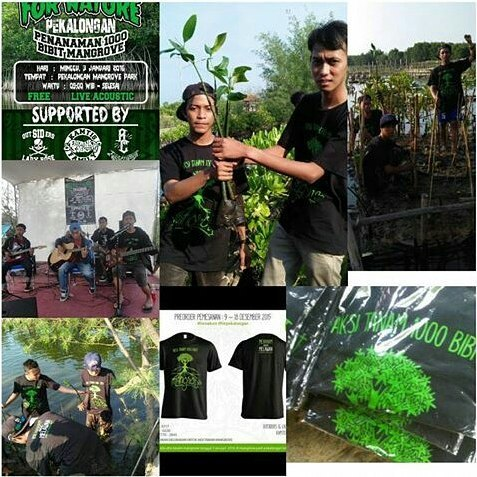

Dari masa ke masa bumi kita mengalami banyak kerusakan dimana-mana, hutan yang dulunya hijau sekarang menguning kekeringan,sungai yang dulu airnya mengalir dengan jernih sekarang menjadi kecoklatan yang berbaur dengan banyaknya sampah yang ikut hanyut megikuti alur jalannya air.
Sebenarnya sangat banyak orang yang peduli terhadap lingkungan tapi sedikit dari mereka yang mau terjun langsung ke lapangan untuk menjaga kelestarian. Disitulah kami berfikir untuk membuat komunitas untuk menjaga kelestarian alam untuk mengajak masyarakat ikut langsung terhadap pelestarian alam ataupun mengeksplore keindahan alam kita.
Kegiatan Dalam Komunitas Kami
- Menanam Pohon

Penanaman Mangrove di Pantai Pasir Kencana Pekalongan
- Membersihkan Sampah

Membersihkan sampah di pantai Depok, Kab.Pekalongan pada hari bumi
- Mengolah Sampah
- Mendaki Gunung
Memenjarakan sampah pada botol plastik agar sampah-sampah kecil dapat tertata dan jika sudah mencapai puluhan botol bisa dijadikan tempat duduk, meja dll
Kegiatan tersebut juga dilakukan oleh Sekolah Alam Pekalongan
Pendakian gunung prau